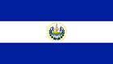

Símbolos Patrios

Es la Bandera Nacional un paralelogramo de tela compuesto de tres
franjas horizontales: azules la primera y la tercera, blanca la
del centro. Sus dimensiones oficiales son: 3.25 metros de largo
por 1.89 de ancho; cada franja mide 0.63 de ancho. Puede dársele
cualquier dimensión, siempre y cuando conserve las mismas
dimensiones y colores.

Rafael Barraza Rodríguez, calígrafo salvadoreño, creó el escudo
nacional. Fue el ganador de 30 participantes más en el concurso
promovido por el entonces Ministerio de Guerra y Marina, en 1912.
Este símbolo patrio ha sido inspiración para muchos escritores y
poetas que, con el correr de los años, han dado diferentes
interpretaciones.
Historia
La historia de El Salvador ha pasado por diversos periodos, los
cuales han marcado su actual estado económico, político y social.
Antes de la llegada de los conquistadores españoles a tierras
americanas, el territorio estaba habitado por diversos pueblos
nativos que ya habían formado órdenes sociales sofisticadas; con la
conquista, el sincretismo y el sometimiento toman protagonismo hasta
que, la entonces Provincia de San Salvador, adquirió su
independencia del Imperio español, logrando su carácter de Estado en
1824 para formar parte de las Provincias Unidas del Centro de
América, primero, y de la República Federal de Centro América,
después, como una entidad federativa. El Salvador adquiere su
estatus de república libre e independiente en 1859, luego de
separarse de la Federación Centroamericana en 1841, unión que fue
disuelta de facto dos años antes, en 1839, al haberse separado de
esta el resto de estados centroamericanos, quedando solo El Salvador
como miembro oficial de ella. A partir de mediados del siglo XIX, El
Salvador inicia un lento proceso de consolidación económica y social
como nación independiente hasta comenzar la concreción de esta con
las Reformas liberales entre las décadas de 1870 y 1880. Esta
coyuntura inauguraría el período denominado "La república
cafetalera", que caracterizaría a la historia salvadoreña al menos
hasta la década de 1920. En 1931 se inicia un periodo conocido como
la "dictadura militar", donde el ejército controla al Estado hasta
1979. Durante los años ochenta sucedió una guerra civil, dejando un
saldo de muertos y desaparecidos sin precedentes en su historia. Es
en 1992 cuando se firman los Acuerdos de Paz de Chapultepec, evento
que marca el inicio de una nueva época en la historia de la nación.
En la actualidad, la situación económica y social tiende a
dificultar las posibilidades de superación de la población.